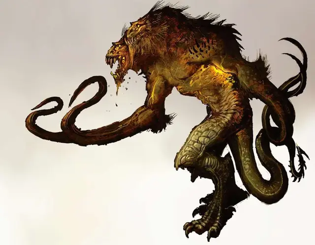

Демогоргон
Demogorgon
Средний Монстр, без мировоззрения, именной НИП

Класс Доспеха 15 (природный доспех)
Хиты 60 (8к8 + 24)
Скорость 30 футов
| мод | спас | ||
|---|---|---|---|
| СИЛ | 16 | +3 | +3 |
| ЛОВ | 12 | +1 | +1 |
| ТЕЛ | 16 | +3 | +3 |
| мод | спас | ||
|---|---|---|---|
| ИНТ | 3 | −4 | −4 |
| МДР | 12 | +1 | +1 |
| ХАР | 5 | −3 | −3 |
Навыки Восприятие +3, Скрытность +5
Чувства слепое зрение 60 футов, пассивное Восприятие 13
Опасность 4 (1100 опыта)
Бонус мастерства +2
Особенности
Данный монстр из приключения по сериалу «Очень странные дела» имеет то же имя что и знаменитый демон лорд.
Если вы искали последнего, то перейдите по следующей ссылке: Демогоргон (MToF)
— Господин Финик.
Кровавое бешенство. Демогоргон совершает с преимуществом броски рукопашных атак по существам, у которых хиты ниже максимума.
Тонкий нюх. Демогоргон совершает с преимуществом проверки Мудрости (Восприятие), полагающиеся на обоняние.
Регенерация. Демогоргон восстанавливает 10 хитов в начале своего хода. Если Демогоргон получает урон кислотой или огнём, эта особенность не действует в начале его следующего хода. Демогоргон умирает только если начинает ход с 0 хитов и не может регенерировать.
Действия
Мультиатака. Демогоргон совершает три атаки: одну Укусом и две Когтями.
Укус. . Рукопашная атака оружием: +5 к попаданию, досягаемость 5 футов, одна цель. Попадание: 7 (1к8 + 3) колющего урона.
Коготь. . Рукопашная атака оружием: +5 к попаданию, досягаемость 5 футов, одна цель. Попадание: 12 (2к8 + 3) рубящего урона.
Описание
Хищник Перевернутого мира, демогоргон охотится по измерению в поисках несчастных существ, которые находят туда дорогу. Размером и формой напоминающий взрослого гуманоида, рот демогоргона охватывает его лицо и раскрывается подобно распускающемуся цветку.